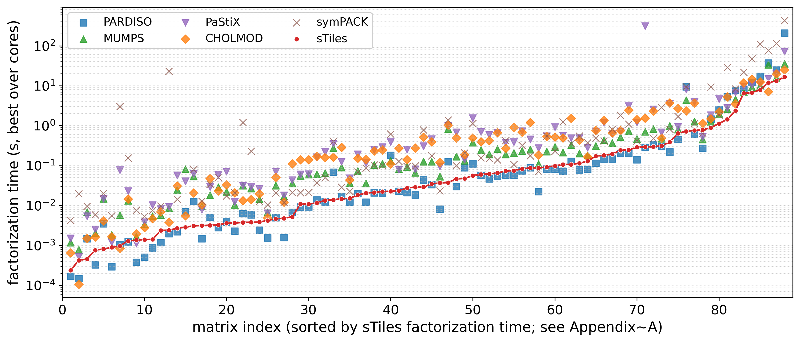
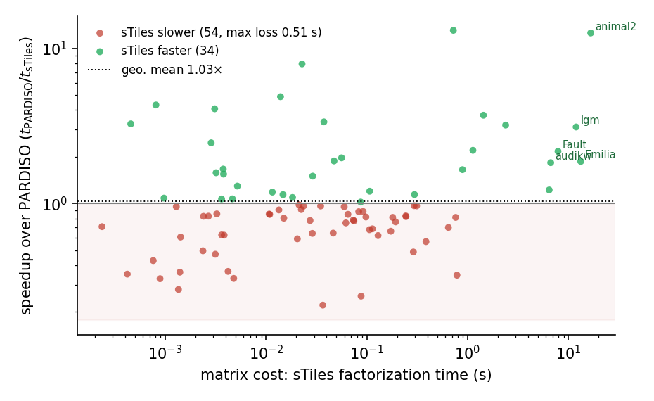
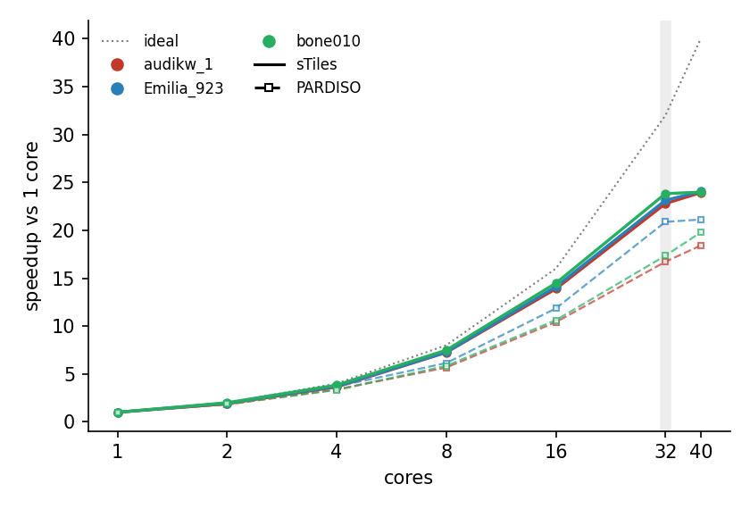

Every matrix in the suite was factored by sTiles and five reference sparse direct solvers. For each matrix and solver we report the best factorization time over a sweep of thread counts. Times below are the same measurements reported in the paper.

Best factorization time (minimum over the swept core counts) for every matrix in the 88-matrix suite and every solver, on the Intel node. Matrices are sorted along the horizontal axis by sTiles' time, so the sTiles curve is monotonic; a competitor marker below it is faster than sTiles on that matrix, above it slower. PARDISO tracks sTiles closely, ahead on the inexpensive matrices and behind on the expensive ones; MUMPS, PaStiX, CHOLMOD, and symPACK are slower across most of the suite.
| # | matrix | sTiles | PARDISO | MUMPS | CHOLMOD | PaStiX | symPACK |
|---|---|---|---|---|---|---|---|
| 1 | bcsstk10 | 0.0002 | 0.0002 | 0.0012 | 0.0007 | 0.0015 | 0.0043 |
| 2 | 1138_bus | 0.0004 | 0.0001 | 0.0008 | 0.0001 | 0.0005 | 0.020 |
| 3 | inla_graph_sem_n2000 | 0.0005 | 0.0015 | 0.0069 | 0.0015 | 0.0054 | 0.0095 |
| 4 | bcsstk11 | 0.0008 | 0.0003 | 0.0020 | 0.0016 | 0.0025 | 0.0059 |
| 5 | inla_graph_sem_n5000 | 0.0008 | 0.0035 | 0.015 | 0.0041 | 0.015 | 0.020 |
| 6 | bcsstk09 | 0.0009 | 0.0003 | 0.0019 | 0.0017 | 0.0012 | 0.0056 |
| 7 | inla_graph_8rtKSK | 0.0010 | 0.0011 | 0.0058 | 0.0009 | 0.078 | 3.00 |
| 8 | gyro_m | 0.0013 | 0.0012 | 0.013 | 0.015 | 0.023 | 0.154 |
| 9 | bcsstk08 | 0.0014 | 0.0004 | 0.0016 | 0.0020 | 0.0011 | 0.0076 |
| 10 | bcsstk14 | 0.0014 | 0.0005 | 0.0034 | 0.0028 | 0.0038 | 0.0053 |
| 11 | nasa2910 | 0.0014 | 0.0009 | 0.0054 | 0.0047 | 0.010 | 0.0076 |
| 12 | nasa4704 | 0.0024 | 0.0012 | 0.0058 | 0.0069 | 0.0082 | 0.0097 |
| 13 | inla_graph_sh7Pgi | 0.0024 | 0.0020 | 0.0086 | 0.0038 | 0.0093 | 23.0 |
| 14 | gyro_k | 0.0027 | 0.0022 | 0.025 | 0.031 | 0.057 | 0.014 |
| 15 | inla_graph_pedigree | 0.0029 | 0.0070 | 0.082 | 0.0056 | 0.041 | — |
| 16 | inla_graph_sem_n20000 | 0.0031 | 0.013 | 0.054 | 0.021 | 0.063 | 0.080 |
| 17 | bcsstk15 | 0.0032 | 0.0015 | 0.0096 | 0.010 | 0.0078 | 0.013 |
| 18 | inla_graph_diff | 0.0032 | 0.0051 | 0.018 | 0.048 | 0.029 | 0.034 |
| 19 | bundle1 | 0.0033 | 0.0028 | 0.029 | 0.023 | 0.059 | 0.051 |
| 20 | msc10848 | 0.0036 | 0.0039 | 0.022 | 0.033 | 0.071 | 0.017 |
| 21 | bcsstk18 | 0.0036 | 0.0023 | 0.010 | 0.021 | 0.012 | 0.021 |
| 22 | inla_graph_net814381 | 0.0038 | 0.0063 | 0.032 | 0.013 | 0.031 | 1.21 |
| 23 | inla_graph_ayaLRw | 0.0038 | 0.0059 | 0.027 | 0.014 | 0.029 | 0.228 |
| 24 | bcsstk17 | 0.0039 | 0.0024 | 0.015 | 0.020 | 0.026 | 0.013 |
| 25 | bcsstk13 | 0.0042 | 0.0015 | 0.0068 | 0.0049 | 0.0064 | 0.010 |
| 26 | msc23052 | 0.0047 | 0.0050 | 0.032 | 0.051 | 0.072 | 0.021 |
| 27 | bcsstk16 | 0.0048 | 0.0016 | 0.017 | 0.012 | 0.018 | 0.012 |
| 28 | thermal1 | 0.0052 | 0.0068 | 0.036 | 0.111 | 0.043 | 0.021 |
| 29 | thermomech_TK | 0.011 | 0.0092 | 0.056 | 0.140 | 0.060 | 0.021 |
| 30 | thermomech_TC | 0.011 | 0.0093 | 0.060 | 0.141 | 0.061 | 0.021 |
| 31 | nasasrb | 0.012 | 0.014 | 0.061 | 0.172 | 0.163 | 0.037 |
| 32 | oilpan | 0.013 | 0.012 | 0.065 | 0.160 | 0.219 | 0.050 |
| 33 | inla_graph_sem_n100000 | 0.014 | 0.068 | 0.276 | 0.162 | 0.353 | 0.400 |
| 34 | thermomech_dM | 0.015 | 0.017 | 0.090 | 0.287 | 0.125 | 0.029 |
| 35 | inla_graph_lgm_10010_bw2 | 0.015 | 0.012 | 0.036 | 0.044 | 0.048 | 0.023 |
| 36 | ct20stif | 0.018 | 0.020 | 0.073 | 0.152 | 0.191 | 0.069 |
| 37 | inla_graph_ferris | 0.021 | 0.012 | 0.036 | 0.143 | 0.116 | 0.087 |
| 38 | s3dkt3m2 | 0.021 | 0.021 | 0.104 | 0.231 | 0.248 | 0.103 |
| 39 | s3dkq4m2 | 0.022 | 0.021 | 0.111 | 0.247 | 0.291 | 0.101 |
| 40 | inla_graph_animal1 | 0.023 | 0.181 | 0.133 | 0.110 | 0.391 | 0.613 |
| 41 | apache1 | 0.024 | 0.023 | 0.081 | 0.273 | 0.079 | 0.127 |
| 42 | smt | 0.027 | 0.021 | 0.092 | 0.140 | 0.253 | 0.095 |
| 43 | G2_circuit | 0.029 | 0.019 | 0.066 | 0.276 | 0.080 | 0.098 |
| 44 | inla_graph_bern_spd | 0.029 | 0.044 | 0.126 | 0.511 | 0.306 | 0.775 |
| 45 | bmw7st_1 | 0.035 | 0.034 | 0.126 | 0.394 | 0.460 | 0.175 |
| 46 | inla_graph_83o4NNNo | 0.037 | 0.0081 | 0.053 | 0.120 | 0.096 | 0.023 |
| 47 | inla_graph_stcov | 0.038 | 0.126 | 0.827 | 1.03 | 1.000 | 1.39 |
| 48 | hood | 0.046 | 0.030 | 0.168 | 0.490 | 0.682 | 0.099 |
| 49 | inla_graph_spacetime | 0.047 | 0.089 | 0.133 | 0.188 | 0.143 | 0.208 |
| 50 | inla_graph_lidense | 0.056 | 0.111 | 0.377 | 0.496 | 1.55 | 1.15 |
| 51 | crankseg_1 | 0.060 | 0.057 | 0.247 | 0.395 | 0.695 | 0.158 |
| 52 | m_t1 | 0.062 | 0.047 | 0.192 | 0.421 | 0.592 | 0.150 |
| 53 | pwtk | 0.065 | 0.055 | 0.260 | 0.672 | 0.673 | 0.139 |
| 54 | thread | 0.073 | 0.057 | 0.192 | 0.272 | 0.381 | 0.425 |
| 55 | parabolic_fem | 0.075 | 0.058 | 0.209 | 0.908 | 0.392 | 0.107 |
| 56 | bmw3_2 | 0.083 | 0.074 | 0.232 | 0.685 | 0.732 | 0.320 |
| 57 | tmt_sym | 0.087 | 0.089 | 0.254 | 1.20 | 0.453 | 0.176 |
| 58 | ship_001 | 0.088 | 0.022 | 0.110 | 0.183 | 0.275 | 0.071 |
| 59 | boneS01 | 0.092 | 0.082 | 0.227 | 0.533 | 0.546 | 0.552 |
| 60 | crankseg_2 | 0.098 | 0.080 | 0.295 | 0.524 | 0.921 | 0.230 |
| 61 | shipsec1 | 0.107 | 0.072 | 0.214 | 0.494 | 0.565 | 1.25 |
| 62 | ecology2 | 0.107 | 0.128 | 0.326 | 1.53 | 0.485 | 0.359 |
| 63 | shipsec8 | 0.114 | 0.078 | 0.202 | 0.437 | 0.496 | 0.551 |
| 64 | nd3k | 0.129 | 0.080 | 0.181 | 0.165 | 0.281 | 0.375 |
| 65 | shipsec5 | 0.173 | 0.115 | 0.309 | 0.759 | 0.714 | 0.488 |
| 66 | af_shell3 | 0.181 | 0.147 | 0.432 | 1.37 | 1.19 | 0.409 |
| 67 | ship_003 | 0.193 | 0.147 | 0.366 | 0.663 | 0.616 | 0.809 |
| 68 | consph | 0.244 | 0.203 | 0.512 | 0.760 | 0.719 | 1.81 |
| 69 | ldoor | 0.245 | 0.202 | 0.729 | 2.43 | 3.08 | 1.09 |
| 70 | af_0_k101 | 0.290 | 0.141 | 0.467 | 1.42 | 1.21 | 0.412 |
| 71 | inla_graph_yU0G1u | 0.295 | 0.286 | 0.712 | 1.55 | 311 | — |
| 72 | inline_1 | 0.297 | 0.340 | 0.826 | 2.31 | 2.54 | 0.481 |
| 73 | nd6k | 0.312 | 0.301 | 0.475 | 0.486 | 0.679 | 2.86 |
| 74 | inla_graph_net1628760 | 0.387 | 0.220 | 0.985 | 3.70 | 3.52 | 0.819 |
| 75 | apache2 | 0.645 | 0.452 | 0.801 | 2.69 | 0.937 | 1.71 |
| 76 | inla_graph_lgm_48600_bw2 | 0.723 | 9.43 | 4.34 | 2.36 | 8.10 | 9.45 |
| 77 | boneS10 | 0.762 | 0.620 | 1.27 | 3.69 | 3.92 | 1.13 |
| 78 | offshore | 0.784 | 0.271 | 0.452 | 1.14 | 0.529 | 0.653 |
| 79 | nd12k | 0.891 | 1.47 | 1.25 | 1.48 | 1.83 | 9.27 |
| 80 | inla_graph_lgm_100200_bw1 | 1.13 | 2.48 | 1.98 | 2.22 | 4.65 | 1.85 |
| 81 | inla_graph_lgm_50000_bw15000 | 1.44 | 5.32 | 2.59 | 5.30 | 2.81 | 28.9 |
| 82 | inla_graph_lgm_100200_bw2 | 2.38 | 7.63 | 4.58 | 3.54 | 6.73 | 8.34 |
| 83 | bone010 | 6.44 | 7.88 | 7.03 | 11.8 | 9.56 | 21.8 |
| 84 | audikw_1 | 6.67 | 12.2 | 9.18 | 14.7 | 10.5 | 47.3 |
| 85 | Fault_639 | 7.88 | 17.1 | 10.1 | 12.4 | 10.9 | 110 |
| 86 | inla_graph_lgm_50400_bw2 | 11.9 | 37.1 | 33.5 | 7.16 | 14.9 | 76.7 |
| 87 | Emilia_923 | 13.3 | 24.8 | 15.7 | 19.9 | 19.8 | 115 |
| 88 | inla_graph_animal2 | 16.6 | 209 | 35.7 | 25.0 | 72.1 | 432 |
Best factorization time in seconds on the Intel node (minimum over the swept core counts) for every matrix and solver, sorted by sTiles' time to match the figure above. The fastest solver on each matrix is highlighted.

Per-matrix speedup of sTiles over PARDISO against matrix cost (both axes logarithmic; a value above the 1× line means sTiles is faster). By count the contest is a near-tie: sTiles is slower on 54 matrices and faster on 34, yet the geometric-mean ratio (1.03×) already favors sTiles, because its fewer wins are the larger ones. Every loss is on a cheap matrix (all but one under 0.5 s), while the wins are on the expensive matrices and reach minutes.

Strong scaling (speedup over one core) of a single factorization on three large finite-element matrices, sTiles (solid) against PARDISO (dashed), with the ideal line. Both flatten near 32 cores (shaded band), the socket's memory-bandwidth ceiling for sparse Cholesky.